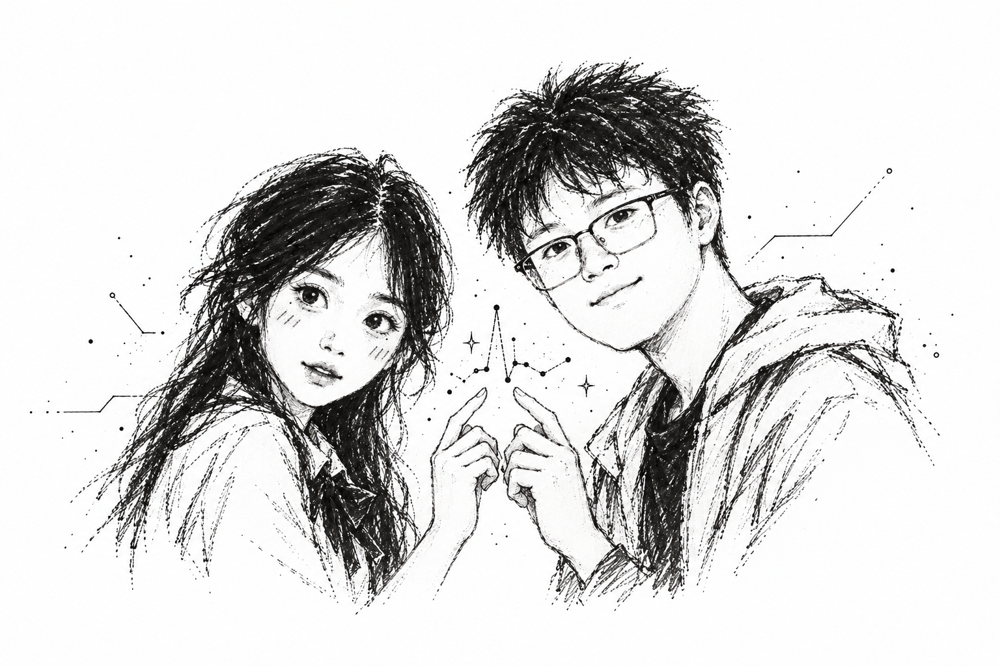

这个博客服务于我的 SNN 学习与未来科研：整理概念、复现代码、记录实验，也诚实保存暂时没有答案的问题。
有时是一张图怎么都看不懂，有时是一段代码卡住整晚。但只要第二天还愿意回来，就不算停在原地。
SNN 是起点，不是捷径。脑机交互还横跨神经科学、芯片、算法、医学与伦理。真正的进步，来自长期积累，而不是一句口号。
SNN RESEARCH LOG / EST. 2026
我是 itknow，一名刚刚启程的 SNN 学习者。我不是站在未来写答案，只想把每一次突然看懂的瞬间，和那些没看懂的夜晚，都认真留在这里。

神经元以脉冲传递信息。我们以问题逼近未来。没有在春天发芽也没关系。你什么时候开始生长，什么时候就是你的春天。
我知道未来很远，但总得有人先点亮第一颗神经元。MISSION / 为什么出发
这个博客服务于我的 SNN 学习与未来科研：整理概念、复现代码、记录实验，也诚实保存暂时没有答案的问题。
有时是一张图怎么都看不懂，有时是一段代码卡住整晚。但只要第二天还愿意回来，就不算停在原地。
SNN 是起点，不是捷径。脑机交互还横跨神经科学、芯片、算法、医学与伦理。真正的进步，来自长期积累，而不是一句口号。
从神经元、脉冲编码和学习规则开始，不跳过基础。
让论文里的曲线在自己的环境里重新出现。
记录失败、比较差异，提出属于自己的小问题。
ROADMAP / 从零到前沿
当前状态：阶段 0 · 建立基础慢一点也没关系，重要的是开始生长。
NOW
NEXT
BUILD
HARDWARE
INTERFACE
NORTH STAR
LAB NOTES / 公开学习记录
因为我想理解信息如何以时间和脉冲的方式被表达，也想寻找集成电路、人工智能与神经科学能够相遇的地方。
研究动机先把学习过程放到阳光下：写清楚、做出来、接受修正。
建站记录微积分、线性代数、概率统计，以及真正能落到代码中的理解。
待完成从一条膜电位曲线开始，观察一次脉冲怎样产生。
待完成“我的多肉自杀了——一生不愁阳光与爱，只是向往野外比温室更多。” 偶尔也记录与科研无关的荒诞。
REUNION PROTOCOL / 再遇协议
“人类好渺小啊。”“但是，爱很伟大呀。”
“如果有一天，意识真的能够抵达另一个世界——
我希望那不是逃离现实，
而是在虚拟世界中，与你再遇。”
这份愿景带一点科幻，也带一点遗憾。它提醒我：技术最终面对的不是参数，而是人的记忆、感受与连接。
ABOUT / 研究者尚未生成
我是 itknow，电子科技大学集成电路相关专业的新生。现在的我仍是编程与科研小白，因此这里不会伪装成熟：看懂了什么、没看懂什么、实验为何失败，都会留下记录。我会犯错，也会被一个问题卡住很久；但第二天，我还是会回来。
终其一生寻找的那颗偏爱你的心，不早就在你的身体里了吗？
在 GitHub 查看我的进度 ↗